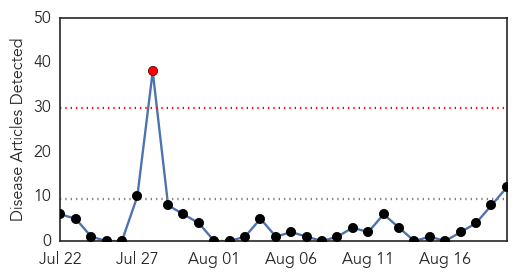
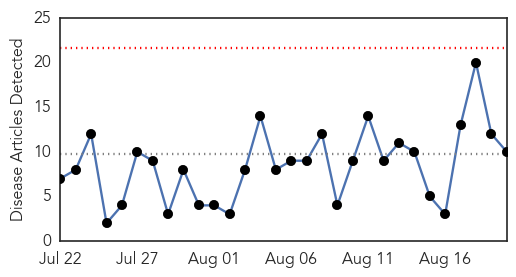
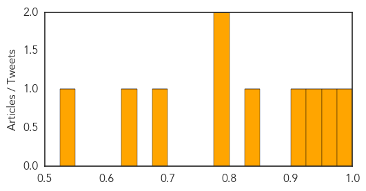

MERS
30-Day Web Trend
1 alerts, 0 warnings

30-Day Twitter Trend
0 alerts, 0 warnings

Article Locations

Article Confidences

Top Articles:
- 0.999
- Saudi MERS infections soar ahead of hajj pilgrimage
- 0.999
- Riyadh MERS total grows; team reports promising vaccine results
- 0.998
- Saudi MERS infections soar ahead of hajj pilgrimage
- 0.998
- Another Saudi emergency dept shutdown over MERS outbreak
- 0.997
- Synthetic MERS Vaccine Works in Animal Tests
- 0.988
- Saudi Arabia registers 2 MERS death, 9 new cases
- 0.987
- Emergency ward in Riyadh hospital shut over MERS
- 0.984
- No cause for alarm over MERS outbreak!
- 0.980
- MERS cases soar in Saudi Arabia ahead of hajj pilgrimage
- 0.953
- MERS less fatal in South Korea than in Saudi Arabia, analysis reveals
- 0.935
- Vaccine for Mers coronavirus 'looks promising' • primenews.com.bd
- 0.500
- News of the day from across the globe, Aug. 20
Top Tweets:
- 0.845
- More cases of MERS-CoV reported in Saudi Arabia, see our latest update. https://t.co/5bXLa5Ss4d
- 0.678
- AFD Blog `Saudi MOH: 10 More MERS Cases In Riyadh' MERS-CoV http://t.co/ffVSGXnTYj
- 0.659
- Latest update on MERS-CoV: 1449 cases globally since 2012, 57 new cases in Saudi Arabia since 21July 2015. See more: http://t.co/shxtUb6yE3
Dengue Fever
30-Day Web Trend
0 alerts, 0 warnings

30-Day Twitter Trend
0 alerts, 0 warnings

Article Locations

Article Confidences
Top Articles:
- 0.997
- Common flu symptoms, consult expert, say doctors
- 0.959
- Can An Army Of Genetically Engineered Mosquitoes Stop Dengue Fever?
- 0.933
- Dengue fear sparks exodus in Kanpur
- 0.920
- Health Minister holds review meet on prevention of dengue in Delhi
- 0.850
- Health Ministry working to dispel myths surrounding transmission of mosquito borne diseases
- 0.791
- Health Secretary reviews preparedness on Dengue Malaria in Delhi
- 0.789
- Delhi's civic agencies asked to spread awareness on dengue
- 0.696
- Disease-carrying mosquitoes, biting ticks, poison ivy and ragweed: All will flourish with climate change
- 0.629
- Dengue fever claims two lives in Binh Duong - Viet Nam
- 0.540
- NDMC fines 4 Delhi hospitals for mosquito breeding : Mail Today, News
Top Tweets:
-
No tweets found for Aug 20, 2015